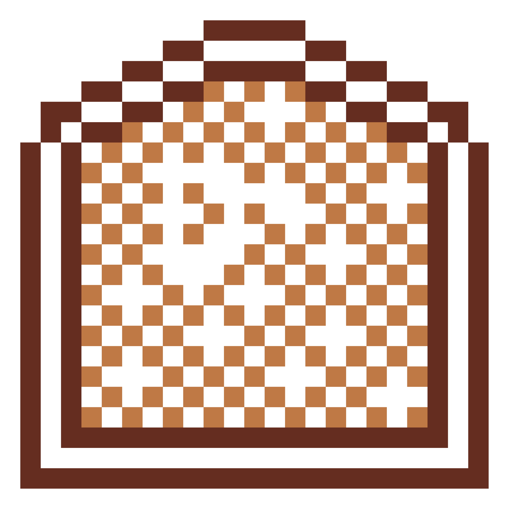
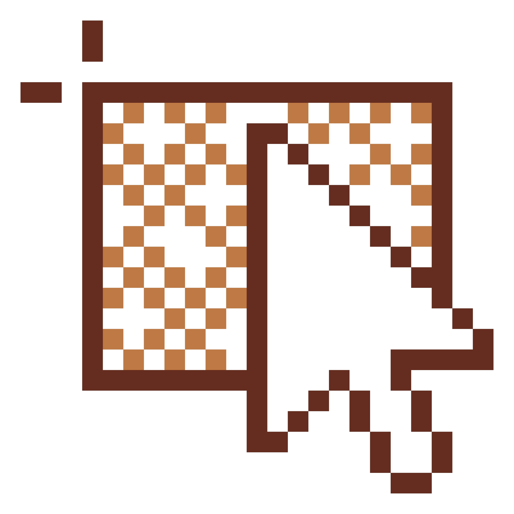

Project Description
- Twelve different icons representing different facets of the University of Iowa’s School of Art, Art History, and Design
- Art education, art history, 3D design, graphic design, jewelry/metalmaking, intermedia, drawing, painting, photography, printmaking, ceramics, and sculpture
- Created icons on sheets of grid paper
- Software used for final rendition: Adobe Illustrator
- Inspiration drawn from the popular game Minecraft
- The neutral light and dark browns were drawn from its color scheme
